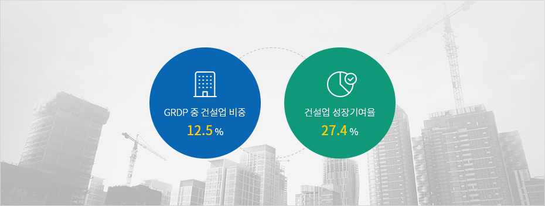

전통 기간산업
- Home
- 투자환경
- 전통 기간산업
건설업은 제주의 GRDP에서 차지하는 비중에 비해
높은 성장기여율을 보이며 제주경제의 고성장을 주도한 산업입니다.
높은 성장기여율을 보이며 제주경제의 고성장을 주도한 산업입니다.



※ 출처 : 2017년, 한국은행 제주본부
제주의 관광산업 호조, 기업 이전 및 투자 증가로 인하여 지역소득 및 취업 기회가 늘어나고 택지개발에 따라 인구수용력도 확대되면서 인구유입이 지속 증가하며 건설투자도 함께 증가하였습니다.
또한 서비스업을 중심으로 제주지역 외국인 직접투자가 증가하며 관광 관련 개발사업으로 인한 투자가 증가하며 2011년 이후 제주의 고성장을 주도한 산업입니다.
향후 지속적인 인구유입과 관광시장 성장에 따른 인프라 확충, 기후변화에 대응하는 다양한 환경 개선을 위한 인프라 투자에 대한 수요 증가가 기대되는 산업입니다.